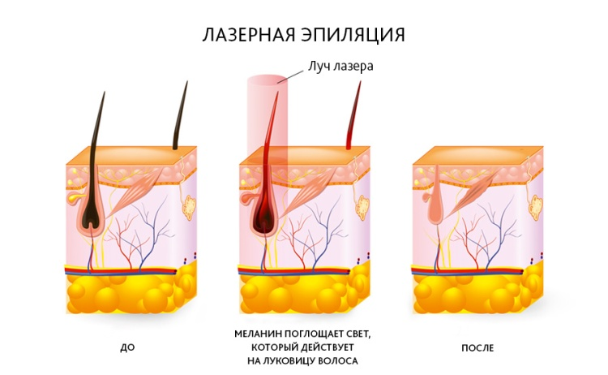

Советы по косметологии
Все что вы хотели знать об элос

Побочные эффекты лазерной эпиляции, противопоказания и последствия популярной процедуры удаления волос.
Лазерная эпиляция по многим причинам стала одним из самых популярных способов избавления от избыточных или просто нежелательных волос на лице и теле. Простая и в то же время действенная аппаратная процедура всего за несколько сеансов позволяет добиться гладкости кожи на долгий период времени. Однако, прежде чем отправляться на прием к косметологу, необходимо как следует взвесить все плюсы и минусы данной процедуры.
Простая и в то же время действенная аппаратная процедура всего за несколько сеансов позволяет добиться гладкости кожи на долгий период времени.
Однако, прежде чем отправляться на прием к косметологу, необходимо как следует взвесить все плюсы и минусы данной процедуры.
Что это такое?
Если вы хотите сделать лазерную эпиляцию, стоит тщательно изучить какие существуют противопоказания, последствия и побочные эффекты у этой процедуры, вредно ли это для здоровья и чем опасна она при беременности и грудном вскармливании. Далее мы расскажем обо всем, что вас интересует.
Принцип действия лазерного аппарата прост и безопасен. Во время обработки излучение воздействует на содержащийся в волосяных луковицах темный пигмент — меланин, постепенно разрушая его.
Кожный покров при этом не затрагивается и не травмируется.
Отличие данного метода от депиляции, которая дает лишь кратковременный эффект, заключается в том, что находящиеся в фазе роста волосяные фолликулы в результате действия лазера погибают и волосы на месте обработки больше не растут
Если процедура выполняется правильно, с соблюдением всех необходимых требований, то несколько сеансов могут избавить от лишних волос на очень долгое время.
Сегодня существуют четыре техники лазерной системы:
- диодная
- александритовая
- неодимовая
- рубиновая
Для получения хорошего результата необходимо пройти курс, состоящийв среднем из 8-10 процедур.
Но окончательное количество нужных сеансов всегда определяется индивидуально в зависимости от личных особенностей организма.
С каждым сеансом волосы будут расти все реже и тоньше, пока не исчезнут окончательно.
Плюсы и минусы
Перед тем как принять решение записаться на прием к косметологу, стоит рассмотреть не только положительные, но и возможные отрицательные стороны этой техники удаления волос.
- безболезненность во время проведения сеансов, т.к. при использовании эпилятора применяется система охлаждения, понижающая чувствительность;
- долговременный эффект от процедуры, в идеале – полное избавление от ненужных волос;
- практически исключен риск возникновения кожных повреждений, таких как шрамы и рубцы;
- если площадь обрабатываемой поверхности невелика, то сеанс лазерной эпиляции занимает очень немного времени;
- роцедура может быть проведена в любое время года.
- технология удаления волос лазером обходится довольно дорого, потому что добиться результата за один раз невозможно, а суммарная стоимость сеансов в результате обойдется в довольно ощутимую сумму;
- этот метод не подходит людям со светлыми или седыми волосами и светлой кожей, т.к. для достижения наилучшего результата необходим контраст между тоном кожи и волос;
В каких случаях наиболее и наименее эффективна
Поскольку принцип действия лазера при эпиляции направлен на пигмент меланин, лучше всего эта процедураподходит обладателям темных волос и светлой кожи.
А вот обладатели смуглой или загорелой кожи могут быть разочарованы полученным результатом.
Кроме того, в отдельных случаях обладатели темного тона кожи могут стать жертвами гиперпигментации, полученной в результате воздействия лазера.
Появление светлых неэстетичных пятен, с которыми придется бороться довольно долго, не добавит радости от проведенной эпиляции. Поэтому категорически не рекомендуется загорать непосредственно перед проводимой процедурой.
Не следует забывать, что удалять волосы перед сеансом не нужно. Они должны отрасти хотя бы до 2-3 мм, только в этом случае вам будет гарантирован отличный эффект.
Кому нельзя
эНеобходимо учитывать, что лазерная эпиляция имеет довольно большое количество противопоказаний:
- заболевания кожи в острой или хронической форме, такие как дерматоз, псориаз, экзема и т.п.;
- сахарный диабет;
- герпес в стадии обострения;
- онкологические заболевания;
- варикоз на месте обработки;
- наличие родинок и кожных повреждений;
- простудные вирусные инфекции – ангина, грипп, ОРВИ;
- аллергия в острой форме;
- склонность к образованию на коже келоидных рубцов;
- свежий загар независимо от того, естественный он или приобретен в солярии.
Не рекомендуется проводить лазерную эпиляцию в состоянии беременности и во время грудного вскармливания.
Также не стоит прибегать к процедуре, если вы принимаете антибиотики. Эти препараты усиливают восприимчивость организма к вспышкам аппарата и могут спровоцировать появление ожогов.
Для проведения обработки в зоне бикини тоже есть свои ограничения. Процедуру не стоит проводить в следующих случаях:
- если у пациента наблюдаются инфекционные половые расстройства;
- грибковые заболевания, такие как молочница и пр;
- нарушена целостность кожного покрова, есть порезы, ссадины и ранки — в этом случае существует вероятность появления рубцов
Существует и индивидуальная непереносимость. Чтобы выяснить, есть ли она у вас, попробуйте для начала обработать небольшой участок кожи в закрытом месте.
В чем заключается вред данного метода
Если вы пренебрегли имеющимися противопоказаниями, а удаление волос проводит недостаточно квалифицированный специалист, существует большая вероятность возникновения осложнений.
Также нежелательные последствия может вызвать неправильно установленный на применяемом аппарате режим или недостаточное количество нанесенного на кожу охлаждающего средства.
Очень важное значение имеет выбор опытного и проверенного косметолога, который будет с вами работать.
Недостаточно квалифицированный врач может неверно определить ваш цветотип и подобрать неправильную технику обработки, или провести сеанс с нарушениями техники, что грозит обернуться неприятными последствиями и осложнениями.
Возможные негативные последствия:
- фолликулит может возникнуть у пациентов с повышенной потливостью, также его появление может спровоцировать посещение бассейна между процедурами;
- кожные ожоги;
- у пациентов со смуглой или загорелой кожей есть риск возникновения гиперпигментации;
- аллергические высыпания могут стать реакцией на охлаждающие препараты или на средства для ухода за кожей после процедуры;
- обострение герпетической инфекции;
- имеющиеся на теле или лице родинки могут в результате действия лазера начать перерождаться в доброкачественные или злокачественные.
При беременности и грудном вскармливании
Врачи не советуют прибегать к методу удаления волос лазером беременным женщинам и тем, кто в данное время кормит ребенка грудным молоком.
Во время беременности и грудного вскармливания в организме происходит ряд гормональных изменений, которые могут повлиять на восприимчивость к проводимой лазером обработке кожи.
То, что раньше не причиняло неудобств и осложнений, может обернуться неприятными последствиями в этот период.
К примеру, процедура может вызвать повышенную сухость кожи, что в результате приведет к шелушениям и сильному раздражению.
Кожа беременных женщин более склонна к образованию гиперпигментации, и воздействие лазером может повлечь за собой возникновение светлых пигментных пятен.
Кроме того, на сегодняшний день до конца не изучено воздействие лазерных импульсов на нервную систему будущего ребенка, и невозможно предугадать, чем это может обернуться в дальнейшем.
От чего следует воздержаться после сеанса
Между сеансами лазерной эпиляции категорически не рекомендуется загорать. Кожа в результате загара становится более сухой и чувствительной.
А поскольку лазер также оказывает обезвоживающее действие, то в совокупности с загаром есть опасность перегрузить кожу и слишком пересушить ее.
Также в результате воздействия ультрафиолета тон кожи становится темнее и контрастность между кожей и волосами снижается. В этом случае эффективность лазерной эпиляции значительно снижается и это может привести к тому, что пропадет уже достигнутый эффект. Для смягчения и увлажнения кожи после сеансов лазерной эпиляции необходимо регулярно наносить на обработанные участки лосьоны или кремы.
В солнечную погоду перед выходом из дома обязательно нужно использовать, как минимум с уровнем защиты 30.
Не рекомендуется также посещать сауну, баню или бассейн. Это может спровоцировать воспаление волосяных луковиц и возникновение фолликулита.
Если после процедуры лазерной эпиляции у вас возникли ожоги, следует воспользоваться специальными заживляющими средствами, такими как пантенол, бепантен и т.п.
Ни в коем случае нельзя отрывать образующиеся на заживающих участках кожи корочки, иначе впоследствии на этих местах могут появиться шрамы или гиперпигментация.
Мнение и отзывы врачей
Можно услышать множество отзывов от людей, прошедших процедуру лазерной эпиляции, но что по поводу этой методики говорят врачи?
-
Константин Самойлов, дерматолог:
«Лазерная эпиляция пока является самым оптимальным средством для приостановления роста волос и ограничения их избыточного количества. Но если причина в гирсутизме или других гормональных нарушениях, то стоит обратиться в первую очередь к эндокринологу для устранения первичных причин возникновения проблемы. Если же медицинских противопоказаний для проведения процедуры нет, то это вполне безопасно».
-
Анна Власова, косметолог-дерматолог:
«Я имею опыт работы на разных аппаратах, и могу сказать одно – среди всех методик по избавлению от лишней растительности лазер наиболее комфортный и щадящий. Личное предпочтение я бы отдала сапфировому или александритовому. Единственный минус – этот метод подходит далеко не всем, так как имеет очень много противопоказаний. Фотопроцедуры для пациентов намного более болезненны и травмоопасны».
-
Владимир Кореев, терапевт:
«В погоне за искусственной красотой многие забывают, что человеческий организм – это своеобразная экосистема, в которой каждый элемент выполняет свою функцию. Стороннее вмешательство может спровоцировать гормональные изменения, проявиться которые могут не сразу, а через продолжительное время. Действие лазера на наше тело пока малоизучено и еще слишком рано утверждать, что подобные процедуры абсолютно безвредны».
Невозможно дать однозначный ответ на вопрос – вредна лазерная эпиляция или нет. Это зависит от очень многих факторов. И окончательное решение, стоит ли прибегать к данному методу или применить другой, всегда остается за самим пациентом.
Подойдите к взвешиванию всех положительных и отрицательных моментов со всей серьезностью, проконсультируйтесь с врачом, тщательно выбирайте косметолога, который будет проводить процедуры. И тогда вы сведете к минимуму риск неприятных последствий, а в результате получите гладкую и нежную кожу, о которой давно мечтали.
Предлагаем вашему вниманию видео, в котором врач косметолог подробно расскажет о процедуре лазерной эпиляции, противопоказаниях и в каких случаях эта методика будет неэффективна: